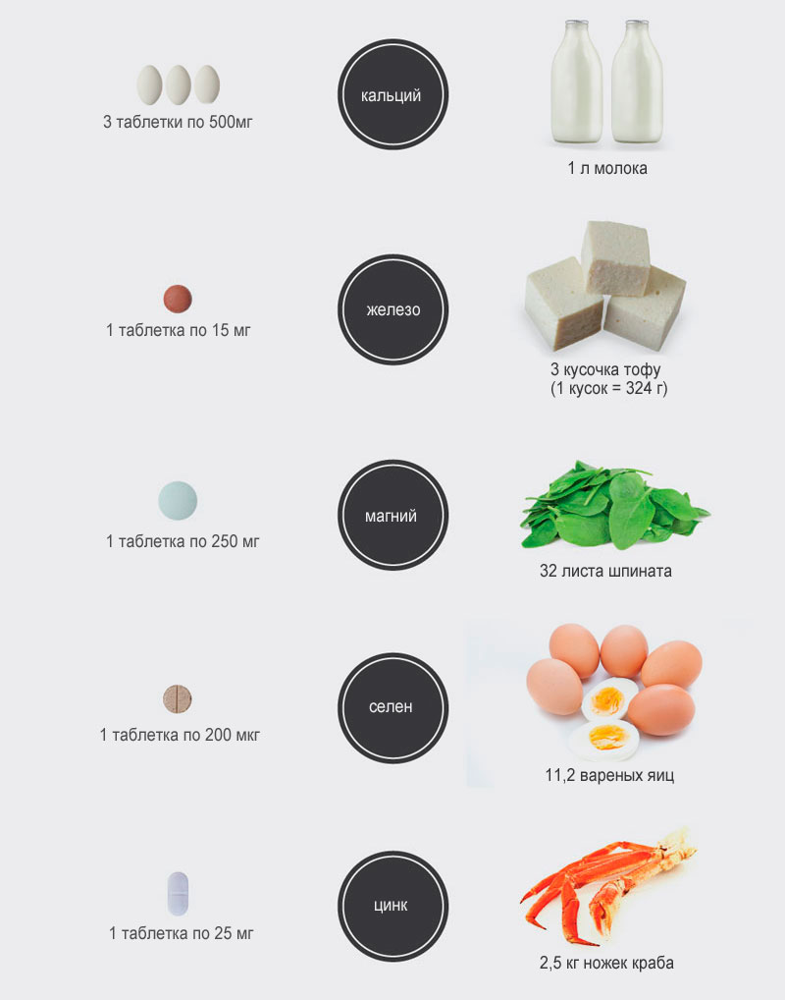
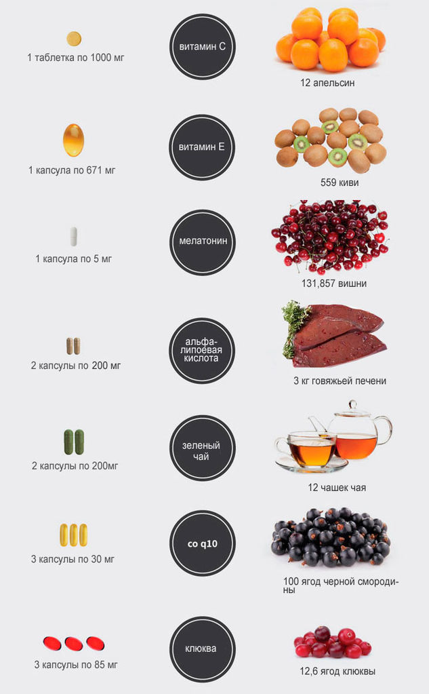

Витаминно-минеральный комплекс (мультивитамины) - добавки, которые предназначены для снабжения организма витаминами, минералами и другими питательными элементами. Такие добавки доступны в форме таблеток, капсул, пастилы, порошка, жидкости и инъекционных растворов. Современные витаминно-минеральные комплексы создаются с учетом особенностей возраста, пола и деятельности человека, так, например, различают: мультивитамины для беременных, детей, пожилых, для спортсменов, для мужчин и женщин. Витаминно-минеральные комплексы не содержат гормональных и вредных веществ, они не опасны для здоровья, и наоборот направленны на его укрепление, а также на активацию метаболических процессов.
Витаминно-минеральные комплексы
Оценка качества комплекса
В настоящее время витаминно-минеральные комплексы имеют широкий диапазон цен: от 100 рублей до нескольких тысяч, хотя состав у всех практически одинаковый. Это объясняется сложным взаимодействием отдельных компонентов комплекса. Часто в недорогих витаминно-минеральных комплексах происходит подавление всасывания некоторых витаминов и минералов, это в свою очередь приводит к нарушению баланса поступающих микронутриентов, что значительно снижает эффективность витаминно-минерального комплекса. В качественных добавках используются специальные технологии (постепенное высвобождение, микрогранулирование, послойное растворение), которые позволяют устранить негативные взаимодействия за счет раздельного поступления микронутриентов, тогда как витамины и минералы синергисты наоборот высвобождаются одновременно
Возможные проявления отрицательного взаимодействия микроэлементов в пище:
- Цинк и медь взаимно антогонистичны, так как каждый мешает усвоению другого, приводя потенциально к дисбалансу.
- Цинк, железо и кальций мешают усвоению друг друга.
- Кальций и железо уменьшают усвоение марганца.
- Витамин Е плохо совместим с железом.
- Витамин С плохо совместим с витаминами группы В.
- Повышенный уровень витамина С способен вызвать дефицит меди.
- Бета-каротин снижает уровень витамина Е.
Синергизм (положительное взаимодействие):
- Витамин А позволяет организму использовать запас железа, находящийся в печени.
- Результат взаимодействия витамина Е и селена направлен на защиту жировых тканей организма.
- Витамин В6 увеличивает биодоступность магния.
- Магний увеличивает количество витамина В6, обладающего способностью проникать в клетки.
- Бор проявляет способность стабилизировать потребление организмом кальция, магния и фосфора.
- Для усвоения кальция необходим витамин D.
- Витамин D улучшает усвоение фосфора.
- Витамин С улучшает усвоение хрома и железа.
- Медь улучшает усвоение и увеличивает пользу, приносимую железом.
- Селен усиливает антиоксидантный эффект витамина Е.
- Цинк при взаимодействии с марганцем активизирует супероксиддисмутазу, которая необходима для нейтрализации свободных радикалов, вызывающих многочисленные повреждения в клетках.
- Витамин К способствует кальцию в строительстве костной ткани и правильной сворачиваемости крови.
Витамины и минералы в бодибилдинге
Практика показывает, что в бодибилдинге, фитнесе, пауэрлифтинге или других видах спорта невозможно добиться хороших результатов, если не употреблять дополнительно витаминно-минеральные комплексы. Спортсмены часто сталкиваются с проблемой тренировочного плато (как при наборе мышечной массы, так и при снижении жировой), даже при условии правильного питания и систематических тренировках, и причиной тому может служить недостаточность витаминов и минералов.
Проблема заключается в том, что потребности организма не всегда удовлетворяются полностью из пищевых источников, особенно это актуально в бодибилдинге, где требуется большое количество высококалорийной пищи, которая зачастую содержит мало витаминов и минералов. Бодибилдеры просто не в состоянии включить в диету достаточное количество фруктов и других источников витаминов, так как это приведет к расстройству пищеварения. В тоже время, потребности организма в витаминах и минералах у атлетов гораздо выше, чем у обычных людей. Это диктует необходимость приема витаминных комплексов.
Зная это, начинающие бодибилдеры сталкиваются со следующей проблемой - выбор оптимального комплекса. На рынке представлены сотни мультивитаминов, которые по описанию производителя являются самыми лучшими, однако в действительности хороших комплексов не так много. Как уже говорилось выше, качество витаминно-минерального комплекса определяется его матрицами, которые позволяют высвобождать вещества с определенной скоростью и в определенных комбинациях, дающие наилучший эффект усвоения. Кроме того, при занятиях спортом (в частности бодибилдингом) изменяются потребности организма: одних витаминов требуется на 20% больше, других на 100%. Именно поэтому, атлетам рекомендуется приобретать специализированные витаминно-минеральные комплексы, которые разработаны с учетом специфических потребностей организма в условиях тренинга. В довершение всего, спортивные витаминно-минеральные комплексы делятся по половому назначению: на мужские и женские, где учитываются физиологические особенности обоих полов.
 Следует обратить внимание на то, что витаминно-минеральные комплексы нужно принимать как при наборе мышечной массы и увеличении силовых показателей, так и при работе на рельеф, и при похудении.
Следует обратить внимание на то, что витаминно-минеральные комплексы нужно принимать как при наборе мышечной массы и увеличении силовых показателей, так и при работе на рельеф, и при похудении.
Рейтинг витаминно-минеральных комплексов
В данном рейтинге представлены лучшие витаминно-минеральные комплексы, которые хорошо подходят как начинающим,так и профессиональным спортсменам.
- Daily Complete Formula от Ultimate Nutrition - хороший комплекс по приемлемой цене
- Animal Pak от Universal Nutrition - витамины, минералы и комплекс восстановителей
- Opti-Men от Optimum Nutrition - комплекс для мужчин
- Opti-Women Optimum Nutrition - комплекс для женщин
- Activite Sport от MHP
- Multi Pro от AST
- MUSCLETECH Vitakic Hardcore
Режим приема
Соблюдайте рекомендации данные производителем. Принимайте комплекс в течение 1-2 месяцев, затем делайте перерыв в течение 1 месяца. Постоянный прием не рекомендуется, в связи с тем, что организм теряет способность усваивать труднодоступные витамины из пищи, а также уменьшается синтез витаминов внутри организма. Периодизация позволяет поддерживать организм здоровым, и профилактирует развитие толерантности.
Минеральные вещества и микроэлементы
Современная классификация минералов (Громова О.А. с соавт., 2003)
ПО ЖИЗНЕННОЙ НЕОБХОДИМОСТИ |
|
Эссенциальные (необходимые) |
Fe, I, Си, Zn, Со, Cr, Mo, Se, Мп |
Условно-эссенциальные |
As, В, Вг, F, Li, Ni, V, Si |
Токсичные |
Al, Cd, Pb, Hg, Be, Ва, Vi, Т1 |
Потенциально токсичные |
Ge, Au, In, Rb, Ag, Ti, Те, U, W, Sn, Zr и др. |
ПО ИММУНОМОДУЛИРУЮЩЕМУ ЭФФЕКТУ |
|
Эссенциальные для иммунной системы |
Fe, I, Cu, Zn, Co, Cr, Mo, Se, Mn, Li |
Иммунотоксичные |
Al, As, B, Ni, Cd, Pb, Hg, Be, Vi, Tl, Ge, Au, Sn и др. |
Примечание. F, Li, Ni, V, Si относят к условно-эссенциальным микроэлементам; As, В, Ge могут при избыточном поступлении проявлять имму-нотоксичные эффекты. К сожалению, все эти элементы включены во многие витаминно-минеральные комплексы. Однако следует помнить, что назначение таких препаратов должно быть строго обосновано наличием лабораторно доказанного дефицита или проживанием в элементодефицитном географическом регионе.
Минералы в продуктах

Антиоксиданти в продуктах

Витамины в продуктах